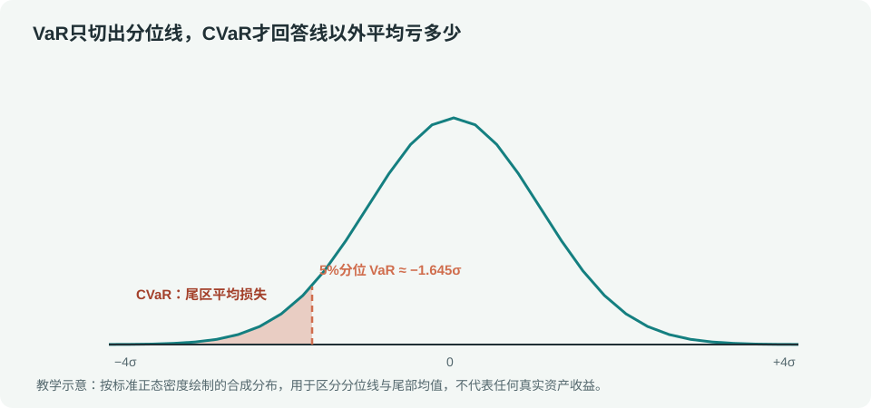
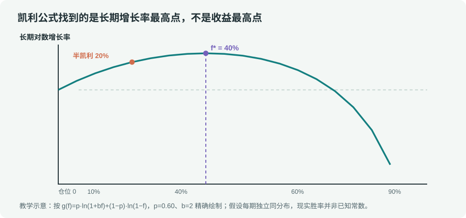

CHAPTER 16 · RISK MANAGEMENT
风险管理体系：从VaR到仓位与止损
风险管理的目标不是消除风险，而是把“不可承受的损失”与“愿意承担的风险”分开：先度量尾部，再决定仓位，最后用纪律执行。
组合95%的时间正常，为什么仍会爆仓
设想一个日度95% VaR为100万元的组合：长期来看，大约每20个交易日里有1天的损失会超过100万元。如果只盯住这句话，很容易产生“亏得过100万”的错觉。VaR只划出一条分位线，它没有说越过这条线之后平均会亏多少，也没有说这些越界日是否会集中出现。
真正把“暂时回撤”变成“永久损失”的，通常是另一个变量——资金结构。当组合带杠杆、有强制平仓线，或投资者在最差时点被迫卖出，账面波动就会转化为不可逆的损失。因此风险管理按固定顺序回答三个问题：尾部有多大（度量）、我愿意承担多少（预算与仓位）、触发条件出现时如何执行（纪律）。
本章边界：风险管理不预测下一次危机，也不承诺收益；它只能约束损失的量级与可达性。文中所有数字都是构造的教学示例，不代表任何真实组合。
系统性风险与非系统性风险
风险最基础的一刀按可分散性切开。系统性风险来自整个市场共同的因子——经济衰退、利率与风险溢价变化、地缘冲突；它无法靠持有很多只股票消除，因为极端行情中大多数资产会同时下跌。非系统性风险来自单个公司或行业——管理层失信、产品事故、单一客户流失；持有一个足够分散的组合可以大幅降低，但不会归零。
两类风险对应两种不同工具：非系统性风险用分散处理，系统性风险用仓位、对冲与期限处理。把它们混为一谈，就会出现“买了20只股票所以没有风险”或“市场要跌所以清空一切”这类跳跃。
| 风险来源 | 能否靠分散降低 | 可用的管理手段 |
|---|---|---|
| 单一公司经营与治理 | 能，随持仓数量增加而下降 | 分散、限额、基本面复核 |
| 行业监管与需求周期 | 部分，跨行业才明显 | 行业上限、轮动假设检验 |
| 利率、通胀、风险偏好 | 不能 | 降低净敞口、对冲、拉长期限 |
| 杠杆与强平条款 | 不能，反而放大 | 控制负债、预留保证金缓冲 |
VaR是一个概率分位数，不是最大亏损
在险价值（Value at Risk, VaR）回答的是“损失分布的某个分位数是多少”。设损失为 L、置信水平为 α：
同一分位数可以用三种方式估计，差别在假设而非定义：历史模拟法直接把历史收益排序取分位，不需分布假设，但过去未发生的极端事件不会被计入；参数法假设正态分布，用 μ−z·σ 计算，简便但低估厚尾；蒙特卡洛法从设定分布中抽样模拟，灵活但结果完全依赖输入假设。

构造算例（教学用）：假设某组合一年 250 个交易日的日收益，按从差到好排序后第 13 差的那一天为 −3.1%。则粗略的 95% VaR ≈ 3.1%，含义是大约 5% 的交易日损失会超过 3.1%。这个数字来自构造序列，与本例的参数假设一致，但不是任何真实组合的历史结果。
| 估计方法 | 输入 | 主要失效场景 |
|---|---|---|
| 历史模拟 | 历史收益样本 | 样本期漏掉真正极端情景 |
| 参数法 | μ、σ 与分布假设 | 厚尾使VaR偏小 |
| 蒙特卡洛 | 模型与随机路径 | “垃圾进、垃圾出” |
CVaR补上VaR的尾部盲区
VaR的缺陷是只报门槛、不报深度：两个组合可以有相同的95% VaR，但门槛以外的损失分布完全不同。条件在险价值（CVaR，也称期望短缺 Expected Shortfall）取的是跨过VaR之后的平均损失：
CVaR还具备次可加性（两组合并后的CVaR不大于各自CVaR之和），这正是分散化理论需要的性质，而VaR一般不满足。巴塞尔委员会的市场风险框架在修订中用期望短缺替代了内部模型法下的VaR作为核心风险度量；这是监管框架的选择，不等于CVaR能预测崩盘。
构造算例：若某组合 95% VaR = 3.1%，而超过门槛的交易日平均损失为 4.8%，则 CVaR ≈ 4.8%。两者用的是同一条合成损失序列，仅为展示定义差异。
最大回撤与回本的不对称
最大回撤（Maximum Drawdown, MDD）衡量从历史高点到随后最低点的最大跌幅。它比 VaR 更贴近投资者的真实体验，因为亏损不对称由算术决定：亏 d 后，回到原点需要上涨

| 回撤 d | 回本所需涨幅 g | 复利含义 |
|---|---|---|
| −10%（0.10） | +11.11% | 还比较可控 |
| −30%（0.30） | +42.86% | 约需半个翻倍 |
| −50%（0.50） | +100.00% | 必须翻倍才能回到原点 |
| −80%（0.80） | +400.00% | 基本不可逆 |
MDD是向后看的：它记录已经发生的路径，不承诺未来。它对样本区间高度敏感，同一策略在不同起止日期会给出不同的 MDD，因此不能拿一个短窗口的“小回撤”证明策略安全。
凯利公式与半凯利：仓位不是收益最大化
仓位是风险预算最直接的工具。对一笔独立重复、胜率与赔率已知的下注，使长期对数增长率最大的下注比例由凯利公式给出：

构造算例：p=60%、b=2 时，f*=(2×0.60−0.40)/2=0.40，即 40%；p=55%、b=1.5 时，f*=(1.5×0.55−0.45)/1.5=0.25，即 25%。这两个结果都是公式的直接代入，不含任何市场数据。
凯利比率对输入高度敏感：胜率被高估一点，f* 就会显著变大。实务中常用半凯利（f*/2）降低波动，因为模型假设每期独立同分布、胜率已知，而现实中这两点都只是近似。因此凯利应当作仓位上限锚，而不是下单指令。
等权、波动率倒数与集中度上限
风险预算是“把多少风险分配给每个持仓”。三种常见做法各有适用边界，不应彼此混用：
- 等权（1/N）：每只股票同比例。不需预测收益与方差，卖涨买跌自带再平衡。DeMiguel、Garlappi 与 Uppal（2009）比较了 1/N 与多个均值方差优化模型，发现 1/N 在多个数据集上的样本外表现具有竞争力；这与“优化模型一定更好”的直觉相反。
- 波动率倒数加权：让每个持仓对组合风险的贡献大致相等，低波动资产配更多、高波动资产配更少。当资产波动率差异很大（如股票与债券）时效果明显。
- 集中度上限：无论模型给出多大权重，单一持仓设硬上限（如 5%–25%，取决于研究深度）。它是防止模型误差与估计错误被放大的最后一道闸。
四种止损与执行纪律
止损把“何时退出”提前写成规则，避免在亏损时临场决策。常见四类：固定比例止损（买入时设一条硬线，如−15%）、移动止损（随价格上涨上移，锁定已有利润）、时间止损（一定时间内假设未兑现即离场，承认机会成本）、基本面止损（买入逻辑被盈证——如新品销量远低于预期——就卖出，与价格无关）。
| 类型 | 触发依据 | 主要风险 |
|---|---|---|
| 固定比例 | 跌幅达到预设阈值 | 震荡行情中被反复触发 |
| 移动止损 | 从阶段高点回撤固定幅度 | 回撤参数设得太紧就过早离场 |
| 时间止损 | 预设时间未达预期 | 忽略基本面在慢变好 |
| 基本面止损 | 买入逻辑被破坏 | 需要持续跟踪，判断不易标准化 |
止损最大的敌人不是“点设得不好”，而是“设了不执行”。因此止损条目应该写成事前可验证的条件（触发价、依据、最晚复核日），而不是事后根据心情修改的口头承诺。
把风险管理写成可检验的记录
案例：为一份风险预算写下事前规则
- 事实：组合当前最大单票权重、总杠杆、可动用保证金缓冲分别是多少。
- 度量：用参数法或历史模拟法给出单期 VaR 与 CVaR，并写明置信水平、持有期与数据窗口。
- 预算：设定单票上限、行业上限与总回撤容忍度，并写出触及这些上限时的动作。
- 反证：如果实际尾区损失持续大于模型 CVaR，说明假设（分布、窗口、相关性）需要修订，而不是把阈值调高。
完成本章后应能独立回答：VaR 与 CVaR 的区别是什么？为什么亏 50% 要涨 100% 才回本？凯利公式为什么建议的仓位比直觉小？为什么止损纪律比止损点位更重要？这四个问题都不需要先学其他章节。
资料来源与适用范围
以下来源用于核对风险度量的定义与监管框架的选择；文中所有数值算例都是构造的教学数据，不代表任何真实组合或市场预测。